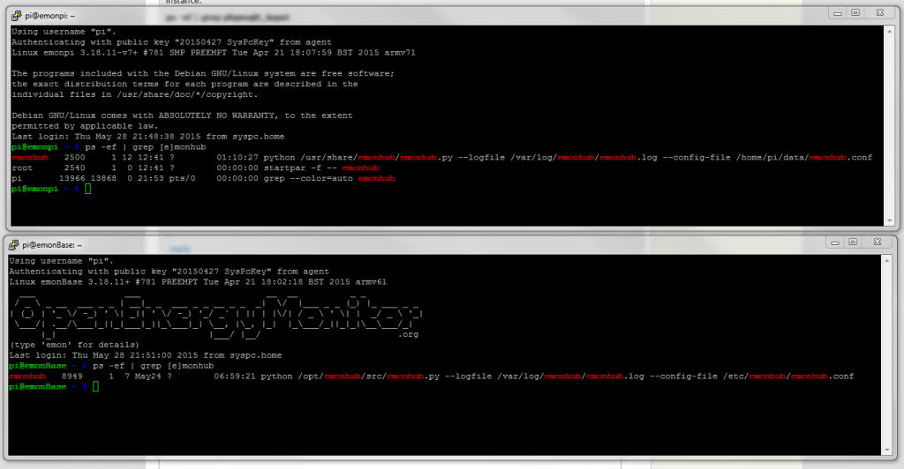

Hi
I just noticed publish to MQTT in the input configuration. Where and how do you set up the mqtt broker URL and are the topic names fixed or can you set them up?
Regards
Ian
Archived Forum |
|
Publish to MQTT - how do you set it up? [Solved]Submitted by Ian Eagland on Sun, 24/05/2015 - 07:31Hi I just noticed publish to MQTT in the input configuration. Where and how do you set up the mqtt broker URL and are the topic names fixed or can you set them up? Regards Ian » |
Re: Publish to MQTT - how do you set it up? [Solved]
There is some information about it in this thread. which may help
Paul
Re: Publish to MQTT - how do you set it up? [Solved]
Thanks Paul,
I don't use emonhub because my set up is multiple nanodeRFs and a local Pi server without the RFM because my sensors are in remote locations sending data over the internet.
Can version 8.5 be used in that situation as all the reference seem to suggest it is for emonhub only? The ultimate for me would be to also post into node-red and a mosquitto broker I have running on a seperate Pi on the same local network as the emoncms server.
I am slowly building in remote control at the remote sites and as a non programmer node red seems the obvious way to go. l am using thingstudio (http://www.thingstud.io ) as the control interface to node red.
Regards
Ian
Re: Publish to MQTT - how do you set it up? [Solved]
It's my understanding that the oem version of Emonhub is a necessity, to feed the data to one of the emoncms modules, in order for it to work.
I'm also using node-red for the same purpose.
Paul
Re: Publish to MQTT - how do you set it up? [Solved]
I thought the "publish to mqtt" process was previously working in v8.4 (I didn't use it so cannot confirm) this section of the "MQTT and node-red for emonHub" discussion suggests it was.
It relies on the phpmqtt_input.php script running in the background and $mqtt_enabled = True, being set in settings.php in emoncms.
The mqtt server settings appear to be hard coded in the script which is located in the emoncms/scripts folder.
Then just run
sudo php phpmqtt_input.php&
Or to run the script automatically at start up you need to create an init script or just add the run command to the end of the /etc/rc.local file.
Then it should just be a case of just defining the "publish to" topic in each "publish to mqtt" process for the values you wish to publish.
I've not tested any of this but that's how I understood things. I pretty sure this will clash with v8.5 which does work more closely with the "emonpi" variant of emonhub for mqtt.
Let us know how you get on if you do try it.
As for using emonhub across multiple sire via a SocketInterfacer it should be built into the next version of emonHub as I have it working in an experimental version already, if you wanted to "hack" the current emonhub it wouldn't be too difficult to add a quick "discard if apikey doesn't match" check one-liner to get get you up and running for now.
Paul
Re: Publish to MQTT - how do you set it up? [Solved]
Hi Paul (pb66)
Followed instructions. The only slight change is I had to run sudo php phpmqtt_input.php& from the script folder or I got an error about not finding a file.
Went to Mosquitto log and saw nothing about emoncms topics. Went back to where I started phpmqtt_input.php and found this error continuously scrolling.
Warning: fread() expects parameter 1 to be resource, boolean given in /var/www/emoncms/Lib/phpMQTT.php on line 160
PHP Warning: feof() expects parameter 1 to be resource, boolean given in /var/www/emoncms/Lib/phpMQTT.php on line 159
Regards
Ian
Re: Publish to MQTT - how do you set it up? [Solved]
You're right, the command does need a path, sorry 'bout that, it should be (assuming default install locations)
sudo php /var/www/emoncms/scripts/phpmqtt_input.php&
As for the errors, and I'm guessing here as both mqtt and php are out of my comfort zone, might suggest there is no connection with the mqtt server.
You will probably be better off dropping the ambersand from the end of the command line until you have it running ok as that just causes the script to run in the background so you can log-off or close the ssh window etc and the script continues, but that also means there is no screen updates.
Are you already using mqtt on that server? you may need to allow that port in the UFW firewall if you use a fixed LAN IP rather than 'locahost'
Paul
Re: Publish to MQTT - how do you set it up? [Solved]
Hi Paul
Running without ampersand seems to take me a bit closer. Emoncms window shows:-
Subscribing to: rx/#
and the emoncms connection shows up in the mosquitto log. Unfortunately it then disconnects with a timeout error.
I have seen this with other mqtt clients and it is usually set up being wrong in some way e.g no client_ID being posted to broker. (It seems to take 2 days per incident to track this kind of thing. At the moment I go forward 2 days and back 1.9 days in my mqtt adventure. I have even managed to find some errors in the latest mosquitto packages that only effect me I guess because I know so little about linux and other users work out what is wrong and fix the issue without thinking and then don't report the issue.)
I am chary of trying emonHub with a hack as your other suggestion as I don't want to mess up my running system unless there is a way I can do this and revert back if I hit problems.
Regards
Ian
Re: Publish to MQTT - how do you set it up? [Solved]
Hi Ian
I totally get what you say about making progress It is definitely an up hill struggle.
The bluerhino phpMQTT module doesn't seem to have changed much beyond extending the auto-reconnect, Have you tried connecting to another broker to see if the issue is client or sever related?
I don't think the emonHub hack would be too difficult to implement or change back but I'm not sure it helps with the mqtt, as it would simply move things around but MQTT would still need implemented somewhere if thats the way you're going. My comment was directed specifically at the "unable to use socket inputs remotely" aspect.
Also just found this https://github.com/emoncms/emoncms/blob/master/scripts/multiuser.md it says this needs adding below line 107, but i'm not sure which file or if the line number has altered
There are also a couple of standalone examples that may help diagnosis.
Paul
Re: Publish to MQTT - how do you set it up? [Solved]
Over the weekend I took another look at this and read all the posts I could find relating to mqtt.
I also updated and upgraded all the Pi software as I have not done that for a while. The result of all this is that I believe phpmqtt_input.php is now running correctly. Starting with the ampersand I get this on the emoncms server:-
pi@StudioPiServer ~ $ sudo php /var/www/emoncms/scripts/phpmqtt_input.php&
[1] 3946
pi@StudioPiServer ~ $ Subscribing to: emoncms/#
In the mosquitto log I see frequent:-
1432627234: Received PINGREQ from Emoncms input subscriber
1432627234: Sending PINGRESP to Emoncms input subscriber
I tracked the earlier error I had. You get this if the broker is not available. It remains even if the broker is then started while phpmqtt_input.php is running . Emoncms mqtt does not reconnect so I guess that is something that will need looking at some time. I have to restart phpmqtt_input.php to reconnect to the broker.
The only problem I now have is that I am not seeing the input that I have set up to "Publish to mqtt" appearing at the broker. Is there anything special about the formatting? The only thing I see is the number 35 appears in the process list:-
x log 35 kwhkwhd kwhkwhd 7s ago
Any ideas as to what to try next would be appreciated. Or even confirmation that it doe/does not work with v8.4.0 not using emonHub.
Regards
Ian
Re: Publish to MQTT - how do you set it up? [Solved]
Hi Ian.
Glad you have made progress:-)
You could try updating phpMQTT.php to tackle the first issue of not reconnecting after attempting to connect to a unavailable broker, see this commit from March, the MQTT stuff was added to emoncms back in Oct.
https://github.com/bluerhinos/phpMQTT/commit/4c397342d74b01fdbe40a9a22723ea58f66553c3
And I just did a little more digging into emoncms and found the "publish to MQTT" broker details seem to be hardcoded in a different location to the broker details for the "MQTT input subscriber".
It seems both work independently of each other and I would expect no reliance in emonhub, certainly at the time of conception that was the case but I cannot confirm for sure.
Paul
Re: Publish to MQTT - how do you set it up? [Solved]
Hi Pau
Many thanks. There are 3 phpMQTT.php on my server:-
pi@StudioPiServer ~ $ sudo find / -name "phpMQTT.php"
/var/www/emoncms/Lib/phpMQTT.php
/var/www/emoncms/emoncms/Lib/phpMQTT.php
/var/www/emoncms/Modules/event/scripts/mqtt/phpMQTT.php
Should I replace them all?
Ian
Re: Publish to MQTT - how do you set it up? [Solved]
Ian, how come you have a emoncms folder within emoncms?
Have you installed emoncms twice?
Paul
Re: Publish to MQTT - how do you set it up? [Solved]
The easy answer is yes that way you won't get the wrong one, but I also wonder which one you are using and as Paul says why do you have emoncms in emoncms? I assume therefore you have 2 of every thing so are you editing the correct input processing file and the correct mqtt subscriber etc.
Try updating /var/www/emoncms/Lib/phpMQTT.php and possibly /var/www/emoncms/Modules/event/scripts/mqtt/phpMQTT.php as although ideally the events module should be using the same phpmqtt.php it won't be unless you edit the hardcoded path and that may break later if you update the events module etc
Try renaming the additional emoncms folder to see if it's being used at all before deleting.
Ideally the broker details should be in setting.php and the events module should use Lib/phpMQTT.php.
Paul
Re: Publish to MQTT - how do you set it up? [Solved]
Hi
I have no idea how I have ended up with an emoncms folder within emoncms. I am definitely using the top version for mqtt because that is where the script file I have been changing is located and I can see the effects of my changes.
The great thing I can report is that publish to mqtt is now working following the change to process_model.php. so I have acheived my aims. However the way the emoncms mqtt client works is clearly different from all the other clients I am using. I hesitate to say it is working incorrectly because I don't have the knowledge. But I have seen some strange things in the mosquitto log all relating to emoncms. Unfortunately I can't show them as I have mosquitto logging to stdout at the moment as I have a problem with file logging on the latest mosquitto version (Which I have to use as it has websockets required by another client!). It almost looks as if there are 2 emoncms clients. At the moment I can see:-
1432647530: Received DISCONNECT from Emoncms Publisher
1432647530: Client Emoncms Publisher disconnected.
1432647534: Received PINGREQ from mqtt_beffa049.41006
1432647534: Sending PINGRESP to mqtt_beffa049.41006
1432647538: Received PINGREQ from Emoncms input subscriber
1432647538: Sending PINGRESP to Emoncms input subscriber
1432647538: Received PINGREQ from Emoncms input subscriber
1432647538: Sending PINGRESP to Emoncms input subscriber
1432647541: New connection from 79.78.46.160 on port 1883.
1432647541: New client connected from 79.78.46.160 as Emoncms Publisher (c1, k10).
1432647541: Sending CONNACK to Emoncms Publisher (0, 0)
1432647541: Received PUBLISH from Emoncms Publisher (d0, q0, r0, m0, 'rain', ... (5 bytes))
1432647541: Sending PUBLISH to mqtt_beffa049.41006 (d0, q0, r0, m0, 'rain', ... (5 bytes))
1432647541: Received DISCONNECT from Emoncms Publisher
Continually scrolling.
Note there is Emoncms Publisher and Emoncms input. It would seem that the mqtt code in emoncms needs some work. I wish I had the knowledge to do this my self but I am out of my depth with PHP.
Thanks for all the help
Regards
Ian
Re: Publish to MQTT - how do you set it up? [Solved]
Hi
I have just taken this a bit further. I rebooted the emoncms server and immediately I was getting traffic from emoncms at the mqtt broker. So you do not need to run phpMQTT_input.php.
Therefore the probable cause of me not being able to publish to mqtt was the hard coded address in process_model.php. If this could be moved to settings.php the current code may well be good to go.
Not running phpMQTT_input.php also stops the two different clients appearing from emoncms. It does not stop the continuouse connect/disconnect from emoncms you see in the broker log. This can't be good for low overhead. All the other clients I have running just use a very occasional ping like so:-
Received PINGREQ from mqtt_2473f66c.db8c0a
Sending PINGRESP to mqtt_2473f66c.db8c0a
Any way at least I am running so now I can move on to the next objective which is remote control of irrigation based on the rain fall logged into emoncms. If any one is interested the irrigation is solar powered on a remote site with no wifi access (At the moment, our town is very proactive in providing public wifi everywhere) so I am using text messages to monitor and control the irrigation with a mobile phone shield on an arduino. With emoncms, mqtt & node-red I have the possibility of making the whole process automatic.
Again many thanks. I would not have achieved much without the support I have received.
Regards
Ian
Re: Publish to MQTT - how do you set it up? [Solved]
The "Emoncms input subscriber" and the "Emoncms Publisher" will be independent clients the way they are currently coded as would the events module i guess, but I'm even less familiar with that so can't be sure.
If you only need to publish you can indeed not run the phpMQTT_input.php.
the way the "publish to mqtt" process works it will connect, publish and then disconnect each update.
I like the concept of the "publish to mqtt" but didn't realize the way it worked, perhaps a long timeout rather than closing the connection combined with a "connect if not connected" check on each update would work better.
I'm in the same boat with php.
Paul
Re: Publish to MQTT - how do you set it up? [Solved]
Unfortunately I can't show them as I have mosquitto logging to stdout at the moment
Hi Ian,
Good to see you've solved your MQTT issues. Had you thought of using the Linux tee command to write the console output to a file as well as display it on the console at the same time?
Something like: <your command here> | tee -a output.file (-a = append to file)
Bill
Re: Publish to MQTT - how do you set it up? [Solved]
Hi Bill
Thanks, that works a treat. Another linux command I must remember.
Regards
Ian
Re: Publish to MQTT - how do you set it up? [Solved]
Hi
Just to confirm that updating phpMQTT from:-
https://github.com/bluerhinos/phpMQTT/commit/4c397342d74b01fdbe40a9a2272... as suggested by Paul (pb66)
solves the problem of reconnecting and removes the error when the broker stop running described in my earlier post.
I now have mqtt data being published and received in emoncms. Received data appears in the input list with the topic name as the node name. Magic! I am impressed how this all works.
The only thing I have left to do is get phpmqtt_input.php running on Pi boot as if I run from ssh it stops running when I shut down the ssh pc.
Regards
Ian
Re: Publish to MQTT - how do you set it up? [Solved]
Ian,
As a temporary measure (unless of course you've already solved the startup issue) you could start
phpmqtt_input.php appended with an ampersand i.e. phpmqtt_input.php &
and it'll continue to run after you close the ssh session.
Regards,
Bill
Re: Publish to MQTT - how do you set it up? [Solved]
Ian, wondered if phpmqtt_input.php could be run from within node-red itself? would this node-red node fulfill that function?
Paul
Re: Publish to MQTT - how do you set it up? [Solved]
Hi
Bill, I did start phpmqtt_input.php with the ampersand but it still seems to stop running when I close SSH.
Paul, I am running node red and the mosquitto broker on a different Pi to emoncms. I think I did this because I was at one time having problems with routing to different ports on the same local address on the network. I have a fixed IP and all my incoming connections to mqtt and emoncms (apart from testing) are actually routed over the internet.
I am a bit cautious about putting them all on the same Pi until I have every thing setup. That would be ideal ultimately because I run my router and the emoncms server PI on a 48volt DC solar powered system for about 10 months of the year.
Regards
Ian
Re: Publish to MQTT - how do you set it up? [Solved]
Hi Ian,
The ambersand just tells the calling script not to wait for any response from that command, effectively splintering it off to the "background" if you are using sudo php phpmqtt_input.php & it should continue running but without sudo it may terminate when the user is no longer logged in (ie when the ssh is ended).
This method will still need manually starting at each reboot unless you automate it by either the "quick and dirty" method of adding "sudo php phpmqtt_input.php &" before the "exit 0" in /etc/rc.local or the "proper" method of writing an init script. The "quick and dirty" will work but if you prefer the "proper" route there is a template included the Raspbian OS at /etc/init.d/skeleton, copy that to /etc/init.d/??? and edit the file names paths etc
Paul
PS you will also need to run sudo update-rc.d NameOfYourScript defaults to get it to start at boot, and here is a real barebones example and how to http://www.stuffaboutcode.com/2012/06/raspberry-pi-run-program-at-start-up.html
Re: Publish to MQTT - how do you set it up? [Solved]
Hi Paul
Slightly more to this than meets the eye! Last night I exited SSH and my emoncms mqtt input stopped updating so I assumed phpmqtt_input had stopped ( I am injecting an mqtt message into emoncms every 5 minutes from Node Red).
I had started with sudo php /var/www/emoncms/scripts/phpmqtt_input.php &
So I opened up an SSH session and started phpmqtt_input and got this message :-
pi@StudioPiServer ~ $ sudo php /var/www/emoncms/scripts/phpmqtt_input.php &
[1] 4367
pi@StudioPiServer ~ $ Already running
BUT emoncms is not receiving any mqtt messages. So I ctrl C out of phpmqtt_input, typed the command again and every thing starts working.
pi@StudioPiServer ~ $ sudo php /var/www/emoncms/scripts/phpmqtt_input.php &
[1] 4388
pi@StudioPiServer ~ $ Subscribing to: emoncms/#
emoncms/test 2
emoncms/test 2
I am not over concerned as I intend to implement start on boot but it suggests there are some quirks in the emoncms php mqtt coding.
Regards
Ian
Re: Publish to MQTT - how do you set it up? [Solved]
That doesn't sound good,
The "[1] 4367" process id is normal and usually the only output when the ampersand is used. But the "Already running" isn't explicitly saying whether it has crashed, aborted starting or opened another instance. If multiple copies are open it may result in conflicts which stop the process(es). Using an init script can prevent multiple instances if configured correctly but there again if it is only ever started once at boot and never fails there should only ever be one instance.
ps -ef | grep phpmqtt_input
will show all running instances of phpmqtt_input ( it will also always show 1 apparently extra process as the search process itself contains the search term too). hopefully it is just multiple copies as that will be avoided in normal use.
Paul
Re: Publish to MQTT - how do you set it up? [Solved]
The "extra" process can be eliminated by issuing the command like this:
ps -ef | grep [p]hpmqtt_input
Re: Publish to MQTT - how do you set it up? [Solved]
Good call Bill! Now I just need to figure out why it only works on one Pi and not the other, Technology... don't ya jus' luv it :-)

Re: Publish to MQTT - how do you set it up? [Solved]
Good call Bill!
Thanks, Paul!
Now I just need to figure out why it only works on one Pi and not the other
The answer to that ought to be interesting.... It's never failed to work for me. (on several Linux distros and FreeBSD)
I have a Model B PI2, and an early 256MB Model B. It works OK on both of them.
Reminds me of the old saying, truth is sometimes stranger than fiction!
Re: Publish to MQTT - how do you set it up? [Solved]
Hi
Last night I added a monitor and keyboard to the emoncms pi server and started phpmqtt_input.php from there in the hope it would keep running when I shut down my pc.
That worked and emoncms is still showing the mqtt input every minute this morning. (I changed the node red trigger to 1 minute for testing purposes).
Also last night I added another mqtt output from node red into emoncms as the beginnings of what I am trying to achieve rather than just testing. The strange thing is this does NOT show up in emoncms. I came into the office and looked at the emoncms server and clearly there I am logging both inputs into emoncms!
I then ran SSH into the emoncms server and ran the command suggested with this result:-
pi@StudioPiServer ~ $ ps -ef | grep [p]hpmqtt_input
root 4506 4492 0 May28 tty1 00:00:00 sudo php /var/www/emoncms/scripts/phpmqtt_input.php
root 4507 4506 0 May28 tty1 00:04:20 php /var/www/emoncms/scripts/phpmqtt_input.php
pi@StudioPiServer ~ $
So I do have 2 instances.
I have not yet set up phpmqtt_input.php to run at boot as its going to take a while to get my head around /etc/init.d/skeleton.
I am just about to reboot the emoncms server which is something I rarely do to see where that gets me.
OK after reboot no instances of phpmqtt_input.php. I started phpmqtt_input direct at the server with sudo but no ampersand. Result at SHH is:-
pi@StudioPiServer ~ $ ps -ef | grep [p]hpmqtt_input
pi@StudioPiServer ~ $ ps -ef | grep [p]hpmqtt_input
root 2972 2958 0 09:26 tty1 00:00:00 sudo php /var/www/emoncms/script s/phpmqtt_input.php
root 2973 2972 5 09:26 tty1 00:00:01 php /var/www/emoncms/scripts/php mqtt_input.php
pi@StudioPiServer ~ $
So a single command seems to cause 2 instances. Can this be a self call in the code somewhere?
However the reboot does result in my second mqtt input showing up in emoncms!
So my conclusion is that emoncms mqtt can be made to work and hopefully will do what I want but the coding has a few issues. Out of interest is it the same code used for mqtt when running emonHub?
Yet again thanks for all the help (there needs to be a virtual way we can send real beer or something).
Regards
Ian